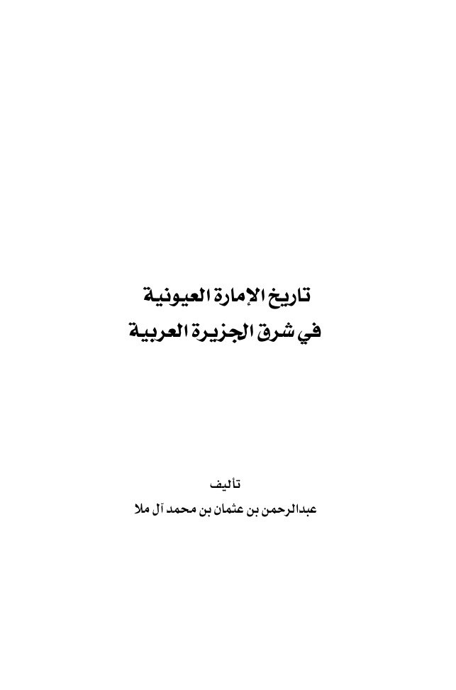
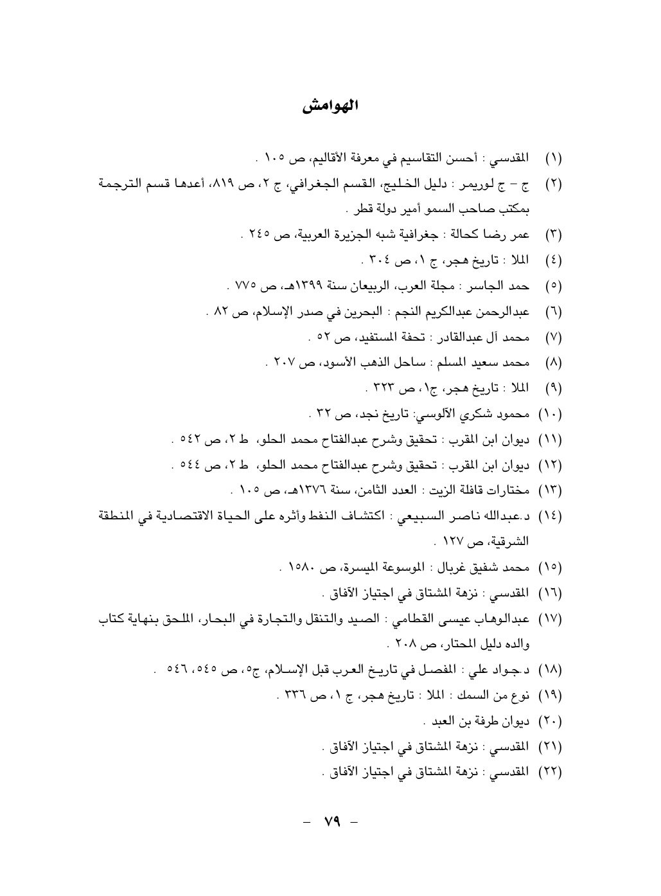

كتاب في تاريخ الإمارة العيونية · صفحات من كتاب عبدالرحمن بن عثمان بن محمد آل ملا، تاريخ الإمارة العيونية في شرق الجزيرة العربية
تاريخ الإمارة العيونية: عبدالوهاب عيسى القطامي مصدرا
ما هي
تاريخ للإمارة العيونية في شرق الجزيرة العربية. يحيل الهامش ١٧ في الصفحة ٧٩ إلى «عبدالوهاب عيسى القطامي: الصيد والتنقل والتجارة في البحار، الملحق بنهاية كتاب والده دليل المحتار، ص ٢٠٨»، وتذكر قائمة المراجع في الصفحة ٢٤٧ الكتاب نفسه باسم «عبدالوهاب العيسى القطامي».
أهميتها
مؤرخ آخر يعتمد على ما كتبه عبدالوهاب عيسى القطامي عن البحر.
صور الصفحات


ملاحظات
نعرض هنا الصفحات الأولى فقط، ويرى أفراد العائلة بعد تسجيل الدخول كل الصفحات وعددها 3.
المصادر
عبدالرحمن بن عثمان آل ملا، تاريخ الإمارة العيونية في شرق الجزيرة العربية، ص ٧٩ و٢٤٧
كيف كُتب هذا النص: لا تظهر سنة النشر والناشر في الصفحات المرسلة.
افتح في الموقع التفاعلي